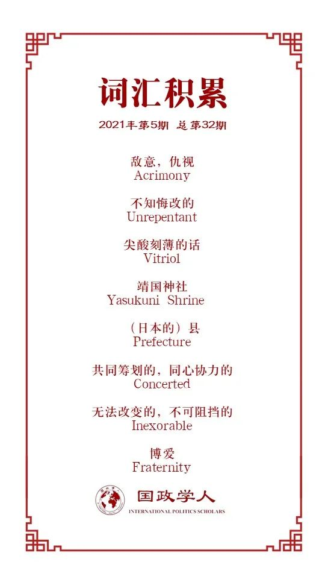

收录于合集

作品简介
【作者】 Chris Deacon, 伦敦政治经济学院国际关系博士生，主要研究领域为国际政治中身份认同与对外政策的关系
【编译】 江若婵（国政学人编译员，伦敦政治经济学院）
【校对】 吴天麟
【审核】 常佳艺，杨紫茵
【排版】 韩心蕊
【美编 】杜丛竹
【来源】 Deacon, Chris (2021) “(Re)producing the ‘history problem’: memory, identity and the Japan-South Korea trade dispute”, The Pacific Review , 34(2). Available at: https://www.tandfonline.com/doi/pdf/10.1080/09512748.2021.1897652?needAccess=true
【归档】 《国际关系前沿》2021年第5期，总第32期。
期刊简介
《太平洋评论》（ The Pacific Review ）于1988年创刊，是研究亚太地区国家的国内政策与国际交流的一个主要平台，重点研究广义的政治与国际关系，也为经济变化和交流，商业和产业政策，军事战略与文化问题诸多领域做出贡献。作为一个跨学科平台，本刊从全球视野出发，旨在探索国家，区域，全球三个层面的联系。2019年本刊的影响因子为1.879，在区域研究类期刊中排名第11。
“历史问题”的产生与再现：
记忆、身份认同与日韩贸易争端
(Re)producing the ‘history problem’:
****memory, identity and the Japan-South Korea trade dispute
Chris Deacon
内容提要
国际关系学者，尤其是理性主义派，一直将日韩关系视作令他们迷惑不解的一个谜团，因为他们难以解释一贯充满敌意的“历史问题”（history problem）。因此，尽管许多建构主义学者将历史纳入分析，但是他们往往忽略了创建/重建这种社会现实的过程，从而将这些负面情绪视作韩国和日本文化/认同感的基本要素，而正是这些基本要素引出了各种对外政策。本文以近期的日韩贸易争端为案例研究，改用批判性的建构主义/后结构主义和话语研究方法，来研究“历史问题”的不断出现。本文指出，韩国占主导地位的话术是铭记，意味着日本是不知悔改的殖民侵略者。日本占主导地位的话术是遗忘，意味着韩国是沉溺于过往的感情用事的，非理性的形象。在这个过程中不断产生身份认同感，而双方的身份认同感对于那段艰难历史的态度是冲突的。尽管此类外交政策实践不断产生并强化占主导地位的民族认同，但这些认同也同样影响了外交政策的正当性范围。认同感与对外政策之间相互构成的关系不断重现日韩关系中的“历史问题”。
文章导读
01
引言
日韩贸易争端始于2019年7月1日，日本政府宣布出于国家安全考虑，限制对韩国出口一些对半导体制作过程至关重要的化学品（半导体生产是韩国的一项主要产业）。一开始双方协商失败后，整个韩国也开始遍及对日本商品的公开抵制。8月2日，东京将争端升级到将韩国从可信贸易伙伴的“白名单”里删除。之后，寻求妥协的谈判继续破裂，双边贸易也继续下降。
然而，这场贸易争端其实另有起源。尽管日本政府坚持认为其出口管制措施是源于国家安全问题，但是通常认为其行动的导火线其实是韩国法院关于战时强迫劳动的判决。韩国法院裁定，日本殖民期间强迫劳动的受害者有权从获益的日本企业集团那里获得赔偿。为了提供这些赔偿，法院随即下令没收这些日本公司在韩国持有的股份。然而，日本政府指出，1965年的日韩关系正常化条约已解决了源自殖民时期的所有索赔，并要求韩国政府反对该法院的裁决。文在寅总统拒绝了。这样一来，贸易争端就不应被孤立看待，而应该与同时发生的强迫劳动纠纷一同审视。
在日本内阁将韩国从其可信贸易伙伴的“白名单”中删除以后，韩国总统文在寅于2019年8月2日宣布：“我们不会再一次输给日本。”这句话中的“再一次”影射了比区区贸易争端更加深刻的敌意来源，即朝鲜半岛于1910年至1945年间在日本殖民统治下遭受的苦难。这样的用语体现出那段艰辛历史的记忆在日韩的争端中一直存在，即使是那些表面上宣称与历史无关的争端也不例外。当下的日韩双边关系的特点即关于这段过去的针锋相对。本文以此次贸易纠纷为案例，研究所谓的“历史问题”是如何在日韩关系中被不断产生和再现的。
国际关系中的现实主义学派一向难以解释日韩之间的敌对关系，日韩两国都是美国的区域性盟友，面临着同样的安全威胁，不应有很差的双边关系。因为根据现实主义理论，有着共同盟友与共同敌人的国家互相之间应该是友好的。同样，关于自由主义，Van Jackson提出：“作为自由民主国家，两国都采纳大众选举，个人权利和少数群体保护……都享有流行文化和传统文化的影响，包括广泛的民间交流……两国的经济还被高额贸易与直接投资捆绑在一起……日本和韩国本应该相处得很好。”
在寻求“解决”这一“难题”时，绝大多数分析旨在纳入日韩关系中所谓的“历史问题”—通用术语，用于描述有关日本在二十世纪上半叶战时殖民行为的一系列互相关联的争议，包括但不限于：慰安妇问题，强迫劳工问题，靖国神社问题（尤其是日本政客对其的参拜），关于独岛/竹岛的领土问题，以及讨论以上议题的历史教科书。
02
记忆，认同感与国际政治
国际政治始终受到过去记忆的影响，尤其是这些记忆常常使当代民族认同感影响外交政策的制定。本文认为，所有关于过去的表述内在都是相关的，无论被称作历史（如教科书内容），群体记忆（对一场战争的铭记），或者神话（流传大众的祖先轶事）。这些都是铭记的方式，试图在它们之间进行有序的划分几乎没有任何分析价值，因为所有这些记忆都很重要。因此，本文将记忆广泛理解为过去的代表。
(a) 韩国与贸易争端：铭记的话术
尽管日本政府否认其措施是在报复韩国法院关于殖民时期强迫劳动的裁决，首尔从一开始就一直坚持这一联系。例如，文在寅总统在7月的公开声明中说“日本前所未有地将历史问题与当下的经济问题进行捆绑，这是不明智的。”保守派与进步派媒体同样清楚地表达了这一观点。保守派《朝鲜日报》发表的多篇社论尽管不出所料没有表扬文在寅政府，但也对日本进行了指责。在同一时期，进步派《韩民族日报》则更进一步，将日本的行为描述为“怯懦的贸易报复”。这样一来，“日本的出口管制措施与强迫劳动问题脱不了关系”这一看法立刻成了韩国政坛各界的主流说法。
这样的叙述是将此次贸易纠纷放到更宏观的“历史问题”话术中看待的重要先决条件，使得“将日本看作殖民侵略者的‘他者 (Other)’，将韩国看作受害者的‘自我 (Self)’”这一看法更加具有合理性。这样一来，这些“他者化”的话语反复将日本比喻成“一个不记得过去的国家”，不知悔改的殖民侵略者。因为不能铭记，所以仍然是负罪的。在一个创造了对立的日本的话语体系中，韩国的自我也诞生了。如果此次贸易争端是日本又一次支配韩国的企图，那么就像殖民时期一样，韩国人必须团结起来抵抗这种支配。在这方面，在对日本的行为持批评态度的同时，文在寅多次将此次争端描述为一次机会，用以重申“我们对本国生产的信心“，增强韩国的自给自足并增强其竞争力，这样不仅可以向日本看齐，甚至还能超越日本。《韩民族日报》也反复断言此次贸易纠纷有助于加快半导体产业国有化。
这种坚决的反应并不局限于工业上试图将生产线搬回国的举措，还包括公众对日本的商品与服务大规模的抵制。根据日本国家旅游组织 （2020）的数据，下半年前往日本旅游的韩国游客数量大跌了超过60%。民意调查也显示，对日本有好感的韩国人所占的百分比降到了历史最低点，几乎成了个位数。这种在韩国公众间广泛流传的大众情绪不仅本身融入了关于认同感的话术宣传之中，还展现了这种贸易纠纷的话术框架 （包括一个日本敌人和韩国自我）的巨大影响力。
但应该指出的是，这是韩国主要的，而非唯一的关于贸易纠纷和相关身份认同问题的话语叙述。反对党的保守派政客一直在批评日本在此次争端中的行为并寻求团结对抗，但是有些人也批评文在寅政府仅用言语激发人民的情感，而没有制定“具体计划”，用外交的方式来解决纠纷。尽管如此，以前的保守派政府也曾使用过历史问题来重现对抗日本的韩国身份认同感。例如，2012年李明博成为了第一个在有争议的独岛/竹岛着陆的韩国总统，很明显是利用韩国大众的反日民族主义来支撑他下滑的支持率。就保守派媒体而言，朝鲜日报的社论尽管也坚持认为日本政府的出口管制是一项报复性措施，但有时候也会间接提到一些日本角度的理解。要明确的是，这并非一桩严格按照党派划分意见的议题，即进步人士参与反日宣传，而保守派人士亲日；现实的差别更加细微。然而，正如抵制参与率与民调显示的那样，包含着对日负面情绪的韩国民族认同感极其普遍，并在贸易纠纷中占主导地位。
(b) 日本与贸易争端：遗忘的话术
日本从2019年7月开始对韩国实行出口管制，这些措施被描述为“非报复性措施”，与强迫劳动问题“没有任何关系”。相反，安倍政府表示是出于国家安全考虑才采取该项措施。这些问题的细节从未被完整地解释，但是日本媒体报道，韩国对那些可以转口到朝鲜的，具有潜在军事用途的化学品管理太松懈。因此，就像韩国政府将贸易争端与强迫劳动问题联系起来作为基本话术一样，坚持分离二者就是日本官方论述建设的叙事基础。
这些论述是通过所谓国际法的“理性”，“逻辑”的角度来描述贸易纠纷与强迫劳动问题。安倍政府一向主张1965年日韩邦交关系正常化条约，及其附带的和解协议，已经解决了韩国政府和公民所有关于殖民时期的法律索赔。因此，东京指责首尔违反了国际法。日本政府在无数场合表达了这一论述。即使安倍晋三有一次差点承认日本的贸易措施与韩国法院裁决有关，他也坚持这与法律协定有关，而非历史。这种对日本自我的理性，合法的描绘，与对他者韩国非理性且感情用事的描绘形成了鲜明对照。这些他者化论述的基础是长期以来对韩国人情绪化，易怒的刻画，来源于日本一个世纪以前用以给殖民统治正名的刻板印象。类似的叙述也针对当下不与历史问题直接相关的日韩争端。例如，在韩国禁止从日本福岛县进口产品的问题上，尽管世界贸易组织在争端中站在首尔一方，日本仍声称韩国在评估相关产品的安全性时没有“遵照科学”，暗示首尔在以非理性手段行事。与之形成极大对比的是，日本自己的出口管制措施被认为是合理的国家安全考量的逻辑结果，并且完全符合国际法。这些并不是报复措施；毫无根据的报复非理性之人所为。的确，即使日本在今年早些时候威胁要采取报复性行动，它也谨慎地将其描述成威胁要“根据国际法”行事。
与韩国一样，在贸易纠纷中构建的日本身份认同感也扩充到了更广泛的对历史的态度，但是日本以遗忘性话语为标志。在日本官方叙话中，这样的历史问题应通过法律协议解决（或已由法律协议解决），理应受到尊敬并免于干扰。情绪，情感甚至对过去的反思都是不适当的。在整个纠纷的过程中，当首尔提出更广泛的历史问题时，东京就坚持要与其发展“面向未来”的关系，并一直厌恶哪怕提到这些问题，因为它们已经“被解决了”。首尔在贸易争端背景下对历史问题的回忆也遭到安倍政府批评，安倍政府同时将日本描述为韩国对过去怀恨在心的“受害者”。日本的这种做法始终与韩国的做法相悖，除了指责韩国情绪主义与感性主义，日本还将韩国的做法刻画成试图改写历史。在日本的这种叙事中，“历史”是特指1965年协定；并不是相关的殖民史和战争史。
有关贸易纠纷的官方论述，以及其中包含的日本与韩国的身份认同，也常常被日本的媒体出版物重现，尤其是与政府更亲近的保守派媒体。文在寅被描述为利用民族主义言论煽动反日公众情绪，且在贸易争端中的所作所为“不合逻辑”。有时，社论还转向了关于“危险”的话术，称由于抵制运动和韩国公众的愤怒，日本公民在韩安全可能无法得到保障。但是必须注意的是，与韩国的情况一样，这并非唯一的关于贸易纠纷以及日本身份认同的话术。当然，一大部分日本人民与政府一样对韩国感到厌烦；如同在韩国一样，民调显示日本对韩国持有好感的人数创历史新低。然而在此期间，日本政界，民间社会和媒体界许多人对安倍政府在贸易纠纷上的行动，以及对历史的态度，持批评意见。例如，《朝日新闻》清清楚楚地将出口管制描述成对韩国法院裁定的报复，并始终将“历史问题”定性为争端的根源，认为安倍不应该以这种“消极”的态度反思过去。这样看来，铭记的话术在日本是存在的，经常尝试去对抗官方遗忘的论述。
03
相互构成的身份认同与对外政策
前两部分的分析显示贸易争端已经成为日本韩国互相敌对的身份认同的生产地。这样一来，韩国不断要求日本处理它的过去是正当的，因为事实上那段过去从未结束；它仍然存在。这种情况说明了外交政策与身份认同之间的相互构成关系。一方面来说，韩国身份认同影响着对日政策，因为它定义了对日政策可能，可想象，合法，甚至“自然”的范围。一个在日本尽其所能遗忘历史的时候与日本进行外交，但却完全罔顾其殖民历史的韩国政府几乎是无法想象的。同时，话术性的外交政策也导致了与“他者”日本对立的“自我”韩国，两种民族认同感。这样一来，在一定程度上，“搞外交”就是“处理身份认同“，二者在本体上是不可分割的。
04
话术的重要性
传统的建构主义分析虽然经常注意到日韩关系中“身份认同冲突“的重要性，但是却暗示身份认同是相关历史的自然结果。这样的说法无法解释这些身份认同是如何产生的。正如本文所试图展示的，后建构主义的方法考察了日本和韩国的身份认同在话术中的不断产生，足以指出相关话术的价值。其次，与此相关的是，建构主义分析认为身份认同感起源于针锋相对的外交政策，从而暗示了身份认同与外交政策制定的单向因果关系。后结构主义的方法通过确定日韩对外政策与民族认同感的无法分割，补充了这种理解。
David Campbell认为，就像为了制造出美国的民族身份认同感，苏联被塑造成一个威胁那样，如果要创造一个威胁，一些事件和行动必须先被塑造为威胁。这其中重点并非“坚持认为日本的对外政策是良性的，或者韩国故意制造了一个无法感知的威胁”，而是这些特定的政策与行动被视作威胁，而不是其他的政策与行动。正是话语构造的过程构成了这段外交关系中的“现实”。这一点可由文在寅政府对朝鲜的截然不同的话术证明。可以说，朝鲜有能力在几分钟之内杀死几百万韩国人，并经常针对韩国说一些攻击性言论，或是有一些攻击性行为。因此，在理性主义框架下，平壤对首尔的威胁远比东京来得大。然而这与文在寅政府的话语表述正好相反。文在寅政府一直回避将朝鲜视作威胁，并在很大程度上使用宽容与博爱的语言，作为对朝阳光政策的一部分。此外，这些对比性极强的话语表述在社会理解方面具有重大影响。在此情境下，它们在大部分韩国公众中掀起了相应的情绪。例如，在贸易纠纷期间对韩国人做的民意调查显示绝大多数韩国人相比于安倍晋三和日本，更倾向于金正恩和朝鲜。这些观点很难根据理性主义对”实质性威胁“的理解来解释。
日本也是一样，重点是韩国（而非其他受害于日本过去的战争行为的国家）被刻画成了执着于过去的不理性，情感化的形象。这并不是安倍政府对待日本复杂的历史时惯有的立场。在2016年12月，安倍成为战后第一位访问珍珠港哀悼1941年日本袭击受害者的日本领导人，并于该年年初邀请巴拉克·奥巴马为第一位访问广岛的美国总统。这些访问是共同筹划的结果，在高度情绪化的地点用对于过去的铭记来展示战时敌人之间的和解。安倍政府从未将这样的目的描绘成情绪化或者是非理性的；恰恰相反，它参与地非常积极。日本政府的话术实践将某些对复杂历史进行反思的双边关系视作正当的，而另一些则不是。
05
复制“历史问题”
然而要注意的是，以上所述论点并不能说明这种情况是不可避免的。这种冲突在学界和新闻界文献中通常被描述为无法阻挡的，带有强烈的本质主义(essentialism)暗示。本文一再说明，民族认同感是不稳定且偶然的，而且在日韩两国均存在替代性的民族认同感表述。此类替代性话语可能会引起争议，甚至试图改变这些国家占主导地位的民族认同概念。因此，这些认同感以及对外政策未来发生转变是完全有可能的。
译者评述
日韩双边关系在国际关系大理论中一直具有特殊地位，因为现实主义和自由主义都无法解释两国之间一直不怎么友好的关系，很明显有比共同威胁和意识形态更重要的因素在起作用，而这恰恰证明了建构主义与后结构主义存在的必要性。本文的一大突出贡献就是非常详尽地描述了日韩互相冲突的身份认同，适用范围很广，并不局限于贸易战，而是几乎适用于两国之间每个与殖民历史有关 （甚至是无关）的议题。对韩国来说，历史上日本的多次侵略使得反日情绪几乎已经成为其身份认同不可分割的一部分，以至于对日本的敌意已经不仅仅是一种负面情绪，还成了鞭策国家发展的动力，如本文提到的将半导体产业国有化，具有一定的积极效应。这再次证明了民族情绪并不一定是坏的，关键看怎么使用。对于日本，本文将其复杂的心态分析地极为透彻，将殖民历史问题上没有道德优势的日本对待历史的态度直接挑明了。日本的策略是尽己所能地回避那段不光彩的过去，并阻止过去的污点影响到当下的发展。而且因为面对民族情感高涨的韩国时理亏，所以日本转而诉诸与情感相反的理性，使得这个备受尊崇的品质成为自己新的道德至高点。结果就是当韩国称自己为日本侵略的受害者时，日本也宣称自己是韩国不理性遵守国际条约的受害者，从而弥补自己在殖民问题上失去的正义角色。毕竟受害者的角色更容易获得舆论优势。
本文的另一大贡献就是指出媒体（尤其是具有官方背景的）的宣传效果是非常强的。尽管反对的声音一直存在，但绝大多数民众都会认同政府的说法，尤其是韩国。这进一步证明了尽管民族情感有时会被认为不理智，但它的力量客观来说是极其可观的，所以双方政府都可以利用民众的民族情绪来达成一些其他的目的而不用担心被识破，是个用起来很顺手的政治武器。但凡事有利亦有弊，民族认同与对外政策相互影响，过度渲染民族情绪也会给政府自身带来束缚，比如有时国家利益会要求政客们妥协，而这种妥协如果超出了公众的接受程度就会危机政客们本人的支持率。
与其他主张建构主义与后结构主义的文章不同，本文着重强调了身份认同的可变性，反对将其视作永远不变。首先是反对派的存在让现实很微妙，日韩两国的反对派其实都遵循了对方官方的话术，这使得日后转型成为可能。其次，历史是具有选择性的。什么是历史？哪一段历史才算历史？这都取决于当下政府的利益考量，也是可以变的。比如说日本认为战后的历史应该重视，战时和战前的历史则不应该受到重视。比如说韩国文在寅政府一直将朝韩两国实现民族统一为终极历史目标，所以就会忽略朝鲜时不时的威胁。比如说美国如今是日本最重要的政治，经济，安全盟友，所以与美国一起反思过去的战争就是积极向上的。这样的双重标准也说明特定的民族认同并非是天然的，而是政府有意引导为之。尽管本文的隐含立场是反对现实主义的，但日本对于具有不同实力的国家的不同态度也折射出现实主义中客观实力的重要性，使得现实主义与建构主义得到了有机结合。
总而言之，本文为研究战后日韩关系以及民族认同的产生提供了非常宝贵的视角。
词汇整理

文章观点不代表本平台观点，本平台评译分享的文章均出于专业学习之用, 不以任何盈利为目的，内容主要呈现对原文的介绍，原文内容请通过各高校购买的数据库自行下载。
好好学习，天天“在看”
国政学人
支持学术公益与知识传播
微信扫一扫赞赏作者 __赞赏
已喜欢，对作者说句悄悄话
取消 __
发送给作者
发送
最多40字，当前共字
上一页 1/3 下一页
长按二维码向我转账
支持学术公益与知识传播
受苹果公司新规定影响，微信 iOS 版的赞赏功能被关闭，可通过二维码转账支持公众号。